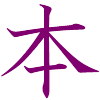
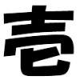
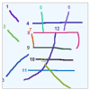
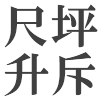

| sci.lang.japan FAQ / 2. Grammar / 2.1. Verbs |
Japanese has many pairs of verbs where one verb takes an object and the other does not, such as hajimaru (to begin) and hajimeru (to begin). For example,
jugyou ga hajimaru (授業がはじまる) = the class startsare correct, but
sensei ga jugyou wo hajimeru (先生が授業をはじめる) = the teacher starts the class
jugyou ga hajimeru (授業がはじめる)are mistakes, because hajimeru needs an object, but hajimaru cannot take an object.
sensei ga jugyou wo hajimaru (先生が授業をはじまる)
In English, verbs like hajimeru which take an object are called transitive verbs, and verbs like hajimaru which do not take an object are called intransitive verbs. In Japanese these are called tadoushi (他動詞) and jidoushi (自動詞) respectively.
There are a great deal of other examples of these pairs of verb. For example ochiru and otosu meaning "to drop":
Zeni ga ochita (銭がおちた) "the coin dropped"Here is a table of some pairs:
Heiji ga zeni wo otoshita (平次が銭をおとした) "Heiji dropped the coin"
| Intransitive | Transitive | |||||
|---|---|---|---|---|---|---|
| Romaji | Kana | Meaning | Romaji | Kana | Meaning | Kanji |
| agaru | あがる | rise | ageru | あげる | raise | 挙 |
| agaru | あがる | rise | ageru | あげる | raise | 上 |
| agaru | あがる | be fried | ageru | あげる | fry | 揚 |
| aku | あく | open | akeru | あける | open | 開, 空, 明 |
| asobu | あそぶ | play | asobasu | あそばす | let play | 遊 |
| atatamaru | あたたまる | get warm | atatameru | あたためる | warm | 温 |
| ataru | あたる | hit | ateru | あてる | hit | 当 |
| atsumaru | あつまる | be gathered | atsumeru | あつめる | gather | 集 |
| abiru | あびる | bathe | abiseru | あびせる | bathe | 浴 |
| amaru | あまる | be left | amasu | あます | leave | 余 |
| aratamaru | あらたまる | be renewed | aratameru | あらためる | renew | 改 |
| arawareru | あらわれる | appear | arawasu | あらわす | show | 現 |
| ikiru | いきる | live | ikasu | いかす | make live | 生 |
| itamu | いたむ | be damaged | itameru | いためる | damage | 傷 |
| itamu | いたむ | be hurt | itameru | いためる | hurt | 痛 |
| iburu | いぶる | smoke | ibusu | いぶす | smoke | 燻 |
| uwaru | うわる | be planted | ueru | うえる | plant | 植 |
| ukabu | うかぶ | float up | ukaberu | うかべる | float up | 浮 |
| uku | うく | float | ukasu | うかす | float | 浮 |
| ugoku | うごく | move | ugokasu | うごかす | move | 動 |
| utsuru | うつる | move (a to b) | utsusu | うつす | move (a to b) | 移 |
| utsuru | うつる | be reflected | utsusu | うつす | reflect | 映 |
| utsuru | うつる | project | utsusu | うつす | project | 写 |
| umareru | うまれる | be born | umu | うむ | give birth | 生 |
| ureru | うれる | sell | uru | うる | sell | 売 |
| okiru | おきる | wake up | okosu | おこす | wake up | 起 |
| osamaru | おさまる | be ruled | osameru | おさめる | rule | 治 |
| osamaru | おさまる | be obtained | osameru | おさめる | obtain | 収 |
| osamaru | おさまる | be controled | osameru | おさめる | control | 修 |
| osamaru | おさまる | be reached | osameru | おさめる | reach | 納 |
| ochiru | おちる | fall | otosu | おとす | drop | 落 |
| odoroku | おどろく | be surprised | odorokasu | おどろかす | surprise | 驚 |
| oboreru | おぼれる | drown | oborasu | おぼらす | drown | 溺 |
| oriru | おりる | go down | orosu | おろす | lower | 降 |
| oreru | おれる | break | oru | おる | break | 折 |
| owaru | おわる | finish | oeru | おえる | finish | 終 |
| kaeru | かえる | return (home) | kaesu | かえす | return (home) | 帰 |
| kaeru | かえる | return | kaesu | かえす | return | 返 |
| kakaru | かかる | cost | kakeru | かける | spend | 掛 |
| kakureru | かくれる | hide | kakusu | かくす | hide | 隠 |
| kasanaru | かさなる | piled up | kasaneru | かさねる | pile up | 重 |
| katazuku | かたづく | be tidied | katazukeru | かたづける | tidy | 片付 |
| katamaru | かたまる | harden | katameru | かためる | harden | 固 |
| kaburu | かぶる | wear | kabuseru | かぶせる | cover | 被 |
| karamu | からむ | be tangled | karameru | からめる | tangle | 絡 |
| kareru | かれる | wither | karasu | からす | let wither | 枯 |
| kawaru | かわる | change | kaeru | かえる | change | 換 |
| kawaru | かわる | change | kaeru | かえる | change | 替 |
| kawaru | かわる | change | kaeru | かえる | change | 代 |
| kawaru | かわる | change | kaeru | かえる | change | 変 |
| kieru | きえる | disappear | kesu | けす | extinguish | 消 |
| kikoeru | きこえる | be audible | kiku | きく | hear | 聞 |
| kimaru | きまる | be decided | kimeru | きめる | decide | 決 |
| kiyomaru | きよまる | be purified | kiyomeru | きよめる | purify | 清 |
| kireru | きれる | be cut | kiru | きる | cut | 切 |
| kiwamaru | きわまる | be mastered | kiwameru | きわめる | master | 究 |
| kiwamaru | きわまる | be mastered | kiwameru | きわめる | master | 窮 |
| kiwamaru | きわまる | reach limit | kiwameru | きわめる | take to limit | 極 |
| kudaku | くだく | be smashed | kudakeru | くだける | smash | 砕 |
| kudaru | くだる | descend | kudasu | くだす | lower | 降 |
| kudaru | くだる | descend | kudasu | くだす | lower | 下 |
| kumoru | くもる | be clouded | kumorasu | くもらす | cloud | 曇 |
| kurushimu | くるしむ | suffer | kurushimeru | くるしめる | afflict | 苦 |
| kuwawaru | くわわる | join | kuwaeru | くわえる | add to | 加 |
| koeru | こえる | become fertile | koyasu | こやす | make fertile | 肥 |
| kogeru | こげる | be scorched | kogasu | こがす | scorch | 焦 |
| koboreru | こぼれる | be spilt | kobosu | こぼす | spill | 零 |
| komu | こむ | be crowded | komeru | こめる | croud | 込 |
| koru | こる | stiffen | korasu | こらす | stiffen | 凝 |
| korogaru | ころがる | roll over | korogasu | ころがす | roll over | 転 |
| kowareru | こわれる | be broken | kowasu | こわす | break | 壊 |
| sagaru | さがる | hang down | sageru | さげる | hang down | 下 |
| sakeru | さける | be torn | saku | さく | tear | 裂 |
| sakeru | さける | be separated | saku | さく | separate | 割 |
| sasaru | ささる | be stuck | sasu | さす | stick | 刺 |
| sadamaru | さだまる | be fixed | sadameru | さだめる | fix | 定 |
| sameru | さめる | cool | samasu | さます | cool | 冷 |
| sameru | さめる | wake | samasu | さます | wake | 覚 |
| shizumu | しずむ | sink | shizumeru | しずめる | sink | 沈 |
| shizumaru | しずまる | quieten | shizumeru | しずめる | calm | 静 |
| shimaru | しまる | be tied | shimeru | しめる | tie | 締 |
| shimaru | しまる | be constricted | shimeru | しめる | constrict | 絞 |
| shimaru | しまる | be closed | shimeru | しめる | close | 閉 |
| sugiru | すぎる | pass | sugosu | すごす | pass | 過 |
| sumu | すむ | be settled | sumasu | すます | settle | 済 |
| sumu | すむ | clear | sumasu | すます | clarify | 澄 |
| sebamaru | せばまる | narrow | sebameru | せばめる | narrow | 狭 |
| sodatsu | そだつ | be brought up | sodateru | そだてる | bring up | 育 |
| somaru | そまる | be dyed | someru | そめる | dye | 染 |
| somukeru | そむける | to have one's back turned | somuku | そむく | to turn one's back to | 背 |
| soru | そる | be warped | sorasu | そらす | warp | 反 |
| sorō | そろう | be arranged | soroeru | そろえる | arrange | 揃 |
| taoreru | たおれる | fall down | taosu | たおす | knock down | 倒 |
| tasukaru | たすかる | be rescued | tasukeru | たすける | rescue | 助 |
| tatsu | たつ | stand | tateru | たてる | stand | 立 |
| tamaru | たまる | be accumulated | tameru | ためる | accumulate | 溜 |
| chijimu | ちぢむ | shrink | chijimeru | ちぢめる | shrink | 縮 |
| chiru | ちる | be scattered | chirasu | ちらす | scatter | 散 |
| tsukaru | つかる | be soaked | tsukeru | つける | soak | 漬 |
| tsuku | つく | be attached | tsukeru | つける | attach | 付 |
| tsutawaru | つたわる | be conveyed | tsutaeru | つたえる | convey | 伝 |
| tsuzuku | つづく | continue | tsuzukeru | つづける | continue | 続 |
| tsunagaru | つながる | be connected | tsunagu | つなぐ | connect | 繋 |
| tsubureru | つぶれる | be crushed | tsubusu | つぶす | crush | 潰 |
| tsumaru | つまる | be blocked | tsumeru | つめる | block | 詰 |
| tsumu | つむ | be loaded | tsumoru | つもる | load | 積 |
| deru | でる | go out | dasu | だす | send out | 出 |
| tōru | とおる | go through | tōsu | とおす | allow through | 通 |
| tokeru | とける | fall apart | tokasu | とかす | take apart | 解 |
| tokeru | とける | dissolve | tokasu | とかす | dissolve | 融 |
| tokeru | とける | melt | tokasu | とかす | melt | 溶 |
| todoku | とどく | arrive | todokeru | とどける | deliver | 届 |
| tomaru | とまる | stop | tomeru | とめる | stop | 止 |
| tomaru | とまる | stay | tomeru | とめる | lodge | 泊 |
| toreru | とれる | come off | toru | とる | take off | 取 |
| naoru | なおる | be fixed | naosu | なおす | repair | 直 |
| naoru | なおる | be cured | naosu | なおす | cure | 治 |
| nagareru | ながれる | flow | nagasu | ながす | pour | 流 |
| naku | なく | cry | nakasu | なかす | make cry | 泣 |
| nakunaru | なくなる | lose | nakusu | なくす | remove | 無 |
| nakunaru | なくなる | die | nakusu | なくす | lose someone | 亡 |
| natsuku | なつく | be attached | natsukeru | なつける | gain affection | 懐 |
| narabu | ならぶ | form a line | naraberu | ならべる | line up | 並 |
| naru | なる | sound | narasu | ならす | sound | 鳴 |
| nieru | にえる | be boiled | niru | にる | boil | 煮 |
| nigeru | にげる | escape | nigasu | にがす | let escape | 逃 |
| nigoru | にごる | become muddy | nigosu | にごす | make muddy | 濁 |
| nukeru | ぬける | be thrown | nuku | ぬく | throw | 抜 |
| nugeru | ぬげる | come off | nugu | ぬぐ | take off | 脱 |
| nureru | ぬれる | get wet | nurasu | ぬらす | dampen | 濡 |
| neru | ねる | sleep | nekasu | ねかす | make sleep | 寝 |
| nokoru | のこる | remain | nokosu | のこす | leave over | 残 |
| nobiru | のびる | be stretched | nobasu | のばす | stretch | 伸 |
| nobiru | のびる | be prolonged | nobasu | のばす | prolong | 延 |
| noru | のる | be placed on | noseru | のせる | place on | 乗 |
| noru | のる | appear in print | noseru | のせる | publish | 載 |
| hairu | はいる | enter | ireru | いれる | put in | 入 |
| haeru | はえる | grow | hayasu | はやす | grow | 生 |
| hagareru | はがれる | peel off | hagasu | はがす | peel off | 剥 |
| hagemu | はげむ | endeavour | hagemasu | はげます | encourage | 励 |
| hajimaru | はじまる | begin | hajimeru | はじめる | begin | 始 |
| hazureru | はずれる | be disconnected | hazusu | はずす | disconnect | 外 |
| hanareru | はなれる | leave | hanasu | はなす | separate | 離 |
| hareru | はれる | swell | harasu | はらす | swell | 腫 |
| hareru | はれる | clear away | harasu | はらす | clear away | 晴 |
| hieru | ひえる | cool down | hiyasu | ひやす | cool down | 冷 |
| hitaru | ひたる | be soaked | hitasu | ひたす | soak | 浸 |
| hirogaru | ひろがる | widen | hirogeru | ひろげる | widen | 広 |
| fukamaru | ふかまる | deepen | fukameru | ふかめる | deepen | 深 |
| fukuramu | ふくらむ | expand | fukuramasu | ふくらます | expand | 膨 |
| fueru | ふえる | increase | fuyasu | ふやす | increase | 増 |
| fueru | ふえる | increase | fuyasu | ふやす | increase | 殖 |
| butsukaru | ぶつかる | be hit | butsukeru | ぶつける | hit | ０ |
| hedataru | へだたる | be separated | hedateru | へだてる | separate | 隔 |
| heru | へる | decrease | herasu | へらす | decrease | 減 |
| hodokeru | ほどける | come apart | hodoku | ほどく | take apart | 解 |
| horobiru | ほろびる | perish | horobosu | ほろぼす | destroy | 亡 |
| horobiru | ほろびる | perish | horobosu | ほろぼす | destroy | 滅 |
| magaru | まがる | bend | mageru | まげる | bend | 曲 |
| makeru | まける | be defeated | makasu | まかす | defeat | 負 |
| mazaru | まざる | be mixed | mazeru | まぜる | mix | 混 |
| machigau | まちがう | be wrong | machigaeru | まちがえる | make an error | 間違 |
| matomaru | まとまる | conclude | matomeru | まとめる | conclude | 纏 |
| mayō | まよう | be lost | mayowasu | まよわす | lose | 迷 |
| mawaru | まわる | go round | mawasu | まわす | turn round | 回 |
| mieru | みえる | be visible | miru | みる | see | 見 |
| midareru | みだれる | be disordered | midasu | みだす | disorder | 乱 |
| mitsukaru | みつかる | be found | mitsukeru | みつける | find | 見 |
| muku | むく | point towards | mukeru | むける | point towards | 向 |
| moeru | もえる | burn | moyasu | もやす | burn | 燃 |
| modoru | もどる | return | modosu | もどす | return | 戻 |
| moreru | もれる | leak | morasu | もらす | leak | 漏 |
| yakeru | やける | burn | yaku | やく | burn | 焼 |
| yasumu | やすむ | rest | yasumeru | やすめる | rest | 休 |
| yabureru | やぶれる | be torn | yaburu | やぶる | tear | 破 |
| yabureru | やぶれる | be defeated | yaburu | やぶる | defeat | 敗 |
| yamu | やむ | stop | yameru | やめる | stop | 止 |
| yurumu | ゆるむ | be loose | yurumeru | ゆるめる | loosen | 緩 |
| yogoreru | よごれる | be dirty | yogosu | よごす | dirty | 汚 |
| yorokobu | よろこぶ | be pleased | yorokobasu | よろこばす | please | 喜 |
| yowamaru | よわまる | weaken | yowameru | よわめる | weaken | 弱 |
| wakareru | わかれる | be divided | wakeru | わける | divide | 分 |
| waku | わく | boil | wakasu | わかす | boil | 沸 |
| waku | わく | gush | wakasu | わかす | gush | 湧 |
| wazurau | わずらう | worry | wazurawasu | わずらわす | make worried | 煩 |
| wataru | わたる | extend | watasu | わたす | extend | 渉 |
| wataru | わたる | cross over | watasu | わたす | pass over | 渡 |
| wareru | われる | break | waru | わる | break | 割 |
Note also that azukaru and azukeru are both transitive verbs. This often comes up in tests on trick questions.
Copyright © 1994-2013 Ben Bullock
If you have questions, corrections, or comments, please contact Ben Bullock or use the discussion forum / Privacy
|  |  |  |  | |
| Book reviews |
Convert Japanese numbers |
Handwritten kanji recognition |
Stroke order diagrams |
Convert Japanese units |